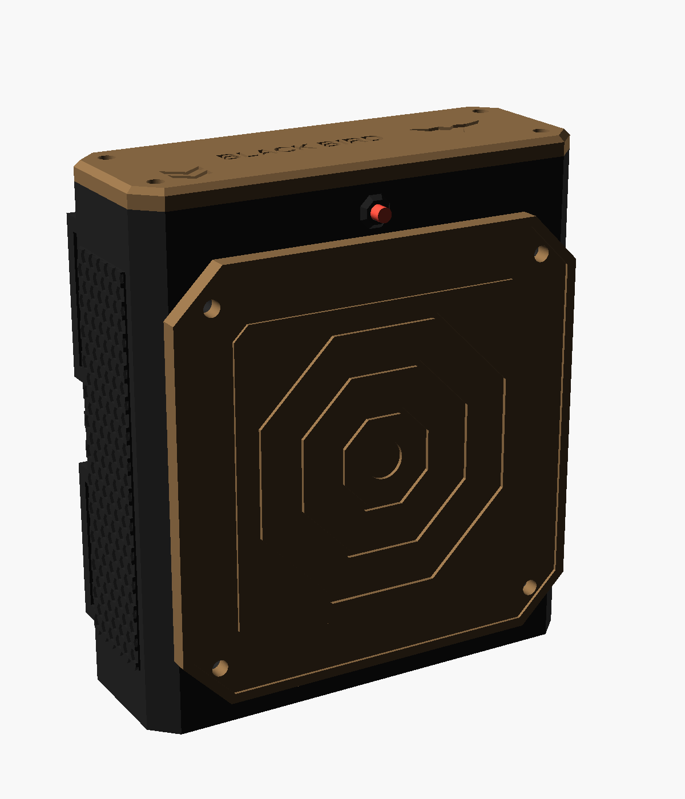
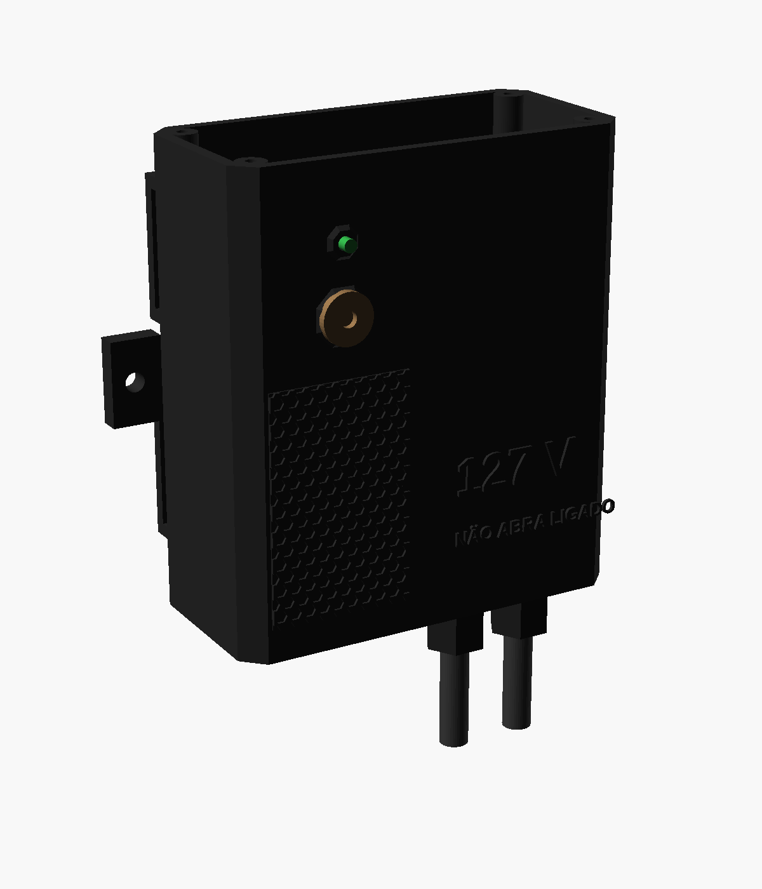
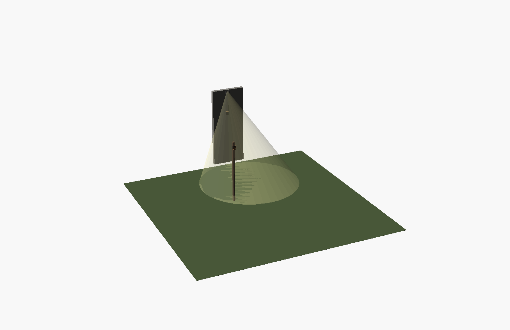
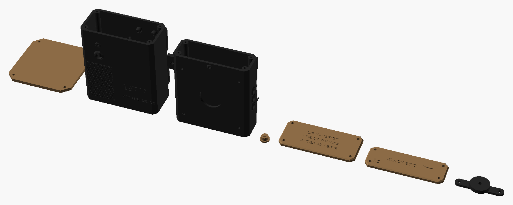

Para os jogos noturnos: alvos espalhados pelo campo que, quando o time acerta a placa, acendem um refletor da rede elétrica (127 V) perto dali por um tempo e clareiam a área. Depois o alvo fica 5 minutos sem efeito. São 2 aparelhos: o alvo (bateria, no poste ou na árvore) e o acionador (caixa fechada ligada na tomada, que liga o refletor por um relé). Requisitos completos em REQUISITOS.md. Medidas em milímetros.
Encoste um cartão de crédito/débito na tela e mova o controle até o retângulo ter exatamente o mesmo tamanho (85,6 × 54 mm).
px/mmPor que intermediário: a eletrônica do alvo é simples (piezo + sono profundo), mas o acionador mexe com a rede de 127 V: precisa de atenção e das regras de segurança da seção 08.
| Situação | O que acontece |
|---|---|
| Pronto | O alvo dorme. O LED vermelho dá uma piscadinha a cada 4 s (ajuda o time a achar o alvo no escuro, junto com a faixa fotoluminescente) |
| Acertou | O piezo acorda a placa em milissegundos, ela manda o aviso 6 vezes seguidas (se um se perder, os outros chegam) e o refletor acende pelo tempo das chaves T1/T2 |
| Espera | 5 min sem efeito: o LED fica apagado e o alvo nem ouve o piezo. Depois, 2 piscadas e volta a "pronto" |
| Tempo (chaves T1/T2) | as duas desligadas = 30 s · só T1 = 1 min · só T2 = 2 min · as duas = 3 min |
| Pareamento | No acionador: segure o botão 3 s (LED verde pisca rápido) e acerte o alvo. Cada acionador aceita até 4 alvos. Sem nenhum pareado, ele obedece a qualquer alvo (bom para testar, ruim no jogo) |
| Bateria fraca | Abaixo de 3,3 V o alvo pisca rápido e para (protege a bateria). Recarregue pelo USB-C de baixo e ligue de novo na chave LIGA |



Todas as peças impressas, nas cores de impressão (coyote e preto); cada peça sai de uma cor só. Arquivos em 3D/stl; quantidades, ferragens e configuração no 3D/LEIA-ME.txt.

| Componente | Medidas (mm) | Função |
|---|---|---|
| Alvo | ||
| ESP32-C3 SuperMini | 18 × 22,5 | Dorme e acorda com a BB; manda o aviso sem fio |
| Disco piezo 27 mm + disco de espuma EVA 10 mm | Ø 27 | Sente a batida da BB na placa |
| 1N4148 + resistores 1 MΩ e 10 kΩ + capacitor 100 nF | — | Transformam a batida num pulso seguro para o pino 3 |
| Bateria 18650 + suporte · TP4056 USB-C | 77 × 21 · 28 × 17 | Energia por semanas; carga pelo USB-C de baixo |
| 2 resistores 1 MΩ | — | Divisor para medir a bateria (pino 4) |
| 3 chaves alavanca MTS-102 | furo Ø 6 | LIGA, T1 e T2 (tempo) |
| LED vermelho 3 mm + 330 Ω | furo Ø 3,2 | "Pronto" (piscadinha a cada 4 s) |
| Fita fotoluminescente 10 mm | ≈ 35 cm | Brilha no escuro em volta da placa |
| Acionador | ||
| ESP32-C3 SuperMini | 18 × 22,5 | Ouve os alvos e comanda o relé |
| Fonte HLK-PM01 (100–240 V → 5 V 3 W), de preferência numa plaquinha com bornes | ≈ 38 × 26 | Alimenta a ESP32 e o relé a partir da tomada |
| Módulo relé 1 canal 5 V com jumper H/L (10 A 250 V) | 26 × 50 | Liga a fase do refletor |
| Porta-fusível de linha + fusível 2 A | 5 × 20 | Protege se der curto |
| 2 conectores de alavanca 3 vias · 2 prensa-cabos PG7 | — | Neutro e terra · entrada e saída dos cabos |
| Cabo de força 3 × 1,0 mm² com plugue (≈ 1,5 m) | — | Entrada: liga na tomada |
| LED verde 3 mm + 330 Ω · botão 6 × 6 | — | Estado e PAREAR/TESTE |
Peças impressas (pasta 3D) | — | caixa, tampa, placa-alvo e trava do piezo (alvo) · caixa, tampa e capa do botão (acionador) |
Sem escala. Na sua SuperMini só aparece o número do pino: "3" = GPIO3. A TP4056 tem os 4 pontos na mesma ponta: OUT+, B+, B−, OUT−.
| De | Para | Observação |
|---|---|---|
| 18650 + / − | TP4056 B+ / B− | Os 2 do meio da ponta da TP4056 |
| TP4056 OUT+ | Chave LIGA → pino 5V da SuperMini | O regulador da placa faz os 3,3 V |
| TP4056 OUT− | GND comum | — |
| Depois da chave LIGA | 1 MΩ → pino 4 → 1 MΩ → GND | Mede a bateria |
| Piezo (+) | 1N4148 → nó → 10 kΩ → pino 3 | No nó: 1 MΩ e 100 nF para o GND. Piezo (−) no GND |
| Pinos 0 e 1 | Chaves T1 e T2 → GND | Ligada = pino no GND |
| Pino 7 | 330 Ω → LED vermelho (perna longa); perna curta no GND | "Pronto" |
Sem escala. Cores da rede: fase (marrom/preto/vermelho), neutro (azul), terra (verde/amarelo). Fios que se cruzam sem bolinha não estão ligados.
| De | Para | Observação |
|---|---|---|
| Tomada F (fase) | Fusível 2 A → fonte L e relé COM | No lado de 127 V da divisória |
| Relé NA (normalmente aberto) | Refletor F | Só o fio da fase passa pelo relé |
| Tomada N (neutro) | Conector de alavanca → fonte N e refletor N | Azul |
| Tomada T (terra) | Conector de alavanca → refletor T | Verde/amarelo; se o refletor não tiver, isole a ponta |
| Fonte +5V / GND | ESP32 5V / GND e relé VCC / GND | Os fios de 5 V passam pela abertura no alto da divisória |
| Pino 5 | Relé IN | Jumper do relé em H (liga com sinal alto) |
| Pino 6 · pino 10 | 330 Ω → LED verde · botão → GND | — |
ALVO/ALVO.ino nas placas dos alvos e ACIONADOR/ACIONADOR.ino nas dos acionadores. Grave sempre pelo USB do PC, com nada ligado na tomada.3D/LEIA-ME.txt.Valores de out/2026, sem frete, só produtos novos (os links do Mercado Livre já abrem com o filtro "Novo"). As buscas não mostraram preços em reais da fonte HLK-PM01, do relé H/L, dos prensa-cabos e do piezo: são estimativas de anúncios comuns; confira antes de comprar. Peças impressas e o seu refletor não entram.
| Item | Onde | Fica para | Menor | Maior |
|---|---|---|---|---|
| Conjunto: kit 5 ESP32-C3 SuperMini (usa 2 por conjunto) | Mercado Livre | 2º conjunto + 1 | R$ 80,00 | R$ 98,00 |
| Fonte HLK-PM01 5 V 3 W (de preferência com bornes) | Mercado Livre | — | R$ 15,00 | R$ 30,00 |
| Módulo relé 1 canal 5 V com jumper H/L | Mercado Livre | — | R$ 8,00 | R$ 15,00 |
| Conjunto: kit 10 discos piezo 27 mm (usa 1) | Mercado Livre | 9 alvos | R$ 10,00 | R$ 20,00 |
| Conjunto: kit 10 prensa-cabos PG7 (usa 2) | Mercado Livre | 4 acionadores | R$ 15,00 | R$ 25,00 |
| Conjunto: conectores de alavanca 3 vias (usa 2) | Mercado Livre | outros acionadores | R$ 20,00 | R$ 60,00 |
| Porta-fusível de linha 5 × 20 + fusível 2 A | Mercado Livre | — | R$ 5,00 | R$ 10,00 |
| Cabo de força 3 × 1,0 mm² com plugue (≈ 1,5 m) | Mercado Livre | — | R$ 12,00 | R$ 20,00 |
| Bateria 18650 (do kit de 2) + suporte | Mercado Livre | a outra do kit: 2º alvo | R$ 17,00 | R$ 21,00 |
| Conjunto: kit 10 chaves MTS-102 (usa 3) | Mercado Livre | 2 alvos + 1 | R$ 15,00 | R$ 25,00 |
| Fita fotoluminescente 10 mm (rolo) | Mercado Livre | muitos alvos | R$ 15,00 | R$ 30,00 |
| Placa ilhada (kit), TP4056, LEDs, resistores, 1N4148, capacitor, botão, velcro, parafusos | kits que você já tem ou dos outros projetos | — | R$ 5,00 | R$ 15,00 |
| 1º conjunto (comprando os kits inteiros) | ≈ R$ 217 | ≈ R$ 369 | ||
| Cada conjunto a mais (reaproveitando as sobras) | ≈ R$ 118 | ≈ R$ 181 | ||
| 6 conjuntos | ≈ R$ 807 | ≈ R$ 1.274 | ||
Para baratear: um acionador pode obedecer a até 4 alvos (vários alvos acendem o mesmo refletor), então dá para ter mais alvos que acionadores.
RELE_ATIVO_ALTO no código.